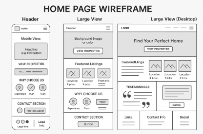

Site Name
Site Name:TuCasa Caribe Real State
Reason for this name:It is my own business name and I would like to start thinking how I will apply all this new knowledge to my personal life
Suggested Domain:tucasacariberealty.com
Site Purpose
The purpose of this website is to provide a professional, modern, and accessible platform to showcase properties for sale or rent, help users search by location or property type, and allow visitors to easily get in touch to schedule viewings or request personalized real estate assistance.
The site also aims to build trust with potential clients through testimonials, clear service information, and a solid digital presence.
Target Audience
This website is designed for individuals and families looking to buy or rent residential or commercial properties in Mexico. The target users include:
- First-time homebuyers seeking guidance and transparency in the buying process.
- Investors looking for profitable rental or resale opportunities.
- Business owners searching for commercial spaces such as offices or storefronts.
Users are typically between 25–60 years old, tech-savvy, and value user-friendly online services that save time and offer trustworthiness.
Scenarios
- Maria is moving to Querétaro for a new job and needs to find a 2-bedroom apartment near the city center. She visits the website to search available rentals by location and price range.
- Roberto and Ana are newlyweds looking to buy their first home. They want to explore different neighborhoods and compare property features and prices.
- Diego is an investor interested in purchasing properties for short-term rental. He uses the site to filter listings by ROI potential and contact the agent for recommendations.
- Lucía owns a business and is searching for a commercial space to open a second store. She wants to view available properties with high foot traffic and good accessibility.
- Kevin, a foreign buyer, wants to retire in Mexico and is looking for beachfront properties. He needs listings in English and virtual tours to help him decide remotely.
Site Map
- HomeIntroduction, featured listings, and call to action.
- Properties:
- For Sale
- For Rent
- About Us: Information about the agent, mission, and values.
- Services: Real estate services offered to buyers, sellers, and renters.
- Contact: Contact form, WhatsApp link, phone, and map integration.
- Blog: Articles on buying tips, market trends, and property advice.
Wireframe
Style Guide
Color Palette
Typography
The Typography used in this website will be the same that will be used at tucasacariberealty.com